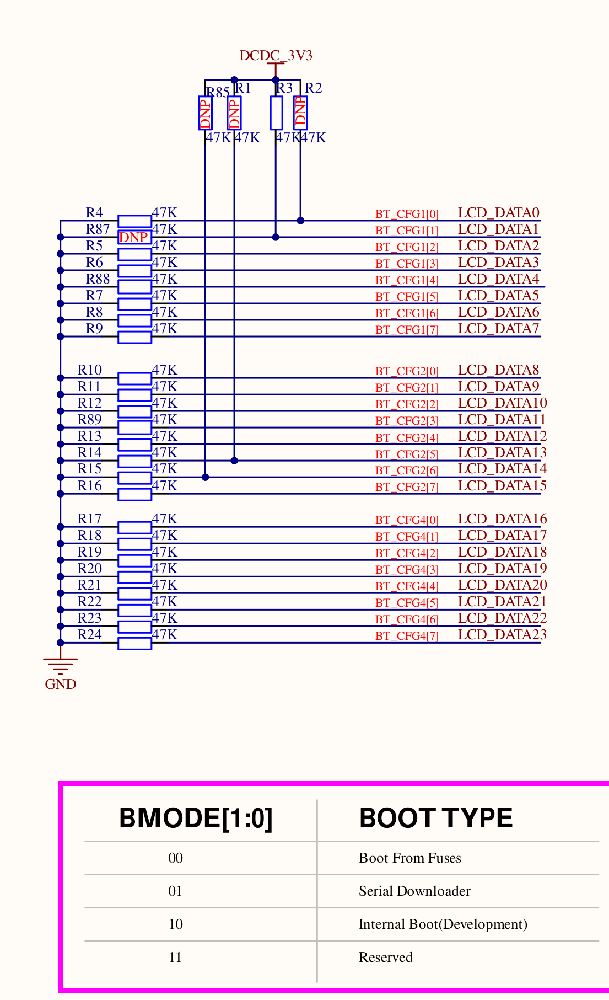

核心板第 7 页：BOOT 配置的 47K 阵列
这一页（IMX6ULL_CORE_BOOT.SchDoc）只有电阻和一个真值表，却是整块板「从哪启动」的开关。24 颗 47K 电阻对应 24 位启动配置，全部挂在 LCD_DATA0–23 这些球上。它回答一个很实际的问题：为什么核心板用 47K、底板用 4.7K，两个电阻并联时谁说了算？

新窗口打开这一页（IMX6ULL_CORE_BOOT.SchDoc）只有电阻和一个真值表，却是整块板「从哪启动」的开关。24 颗 47K 电阻对应 24 位启动配置，全部挂在 LCD_DATA0–23 这些球上。它回答一个很实际的问题：为什么核心板用 47K、底板用 4.7K，两个电阻并联时谁说了算？

新窗口打开i.MX6ULL 复位时会把一批球当作「启动配置输入」采样，称为 BOOT_CFG。它们被分成三组（本板命名 BT_CFG1/2/4，跳过 3，因为 3 在别的封装/别的页用到）：
| 组 | 位 | 复用球 | 典型内容 |
|---|---|---|---|
| BT_CFG1[0..7] | 8 | LCD_DATA0–7 | 启动设备类型、SD 位宽、快速启动等 |
| BT_CFG2[0..7] | 8 | LCD_DATA8–15 | NAND 几何、页大小、EEC 强度 |
| BT_CFG4[0..7] | 8 | LCD_DATA16–23 | SPI NOR 参数、USB 选项、看门狗等 |
三组共 24 位，全部与 LCD 数据线复用。原因：LCD_DATA 是「复位后才有意义」的输出，复位期间把它们当输入采样，正好不冲突。代价是：LCD 屏必须在 SoC 释放复位后才能初始化，否则这些球上的电阻会影响屏的总线。
如果直接用 0Ω 短接到 3.3V 或 GND，编码当然最干净。但有两个问题：
用 47K 上拉/下拉，就变成「弱默认」：核心板给一个默认值，底板用更小的电阻可以把它拉过去。这正是本板的设计：核心板 47K 定默认，底板 4.7K 或拨码改值。
算一下「谁赢」：核心板 47K 上拉到 3.3V，底板 4.7K 下拉到地，两者并联成分压：
V = 3.3 × 4.7/(47+4.7) = 3.3 × 0.091 = 0.30V → 稳稳读成 0
反过来若底板也用 47K 下拉：V=3.3×0.5=1.65V，正好卡在阈值附近——这就是「电阻比必须 ≥10:1」的由来。所以底板选 4.7K 不是随便选的，而是「47K 的十分之一」。
除了 24 位 BOOT_CFG，还有两根独立的 BOOT_MODE0/1（T10/U10），它们决定「大类」：
| BMODE[1:0] | 方式 | 用途 |
|---|---|---|
| 00 | Boot From Fuses | 量产：启动参数烧进熔丝，不可改 |
| 01 | Serial Downloader | USB/串口下载，救砖与首次烧写 |
| 10 | Internal Boot | 按 BOOT_CFG 从 eMMC/NAND/SD 启动 |
| 11 | Reserved | 保留，不要用 |
注意 BMODE 与 BOOT_CFG 是「两级选择」：BMODE 决定「走哪条大路」，BOOT_CFG 决定「大路里的哪条小巷」。这也是为什么救砖只要拨 BMODE=01，不用管 24 位配置。
本页电阻排列有一个规律，读图时能一眼看出来：
所以看哪一位是 1、哪一位是 0，不用查表，直接看电阻的「朝向」。这也是本页画成两列（上拉列/下拉列）而不是一长排的原因：图形本身就是编码表。
其中 R85、R87、R88、R89 标了 DNP，说明这四位在当前 BOM 下不参与编码（悬空 → SoC 内部有弱上下拉，取默认值）。DNP 位是「留给不同 SKU 的旋钮」：贴 eMMC 版与 NAND 版，这几颗的贴装不同。
| 现象 | 测什么 | 判据 | 结论 |
|---|---|---|---|
| 串口无任何输出 | BMODE0/1 电压 | 00/01/10/11 之一，稳定 | 悬空或中间电平 → 拨码/电阻错 |
| USB 下载也认不到 | BMODE 是否 01 | 两脚都低=00，一低一高=01 | 拨码装反或 10K 虚焊 |
| Internal Boot 失败 | BT_CFG 各位 | 与目标介质表一致 | 某位被底板 4.7K 拉反 |
| 偶尔能起偶尔不能 | BT_CFG 电平 | 不应在 1.2–2.0V | 电阻比不足（两边都 47K），判决随机 |
| 贴了 eMMC 却按 NAND 起 | BOM 与 BOOT_CFG | 必须一致 | 换 BOM 或改配置电阻 |
实用技巧：把万用表调到 200k 档，直接量 BT_CFGx 对 3.3V 与对地的电阻，就能反推这一位的默认值，不用拆板。